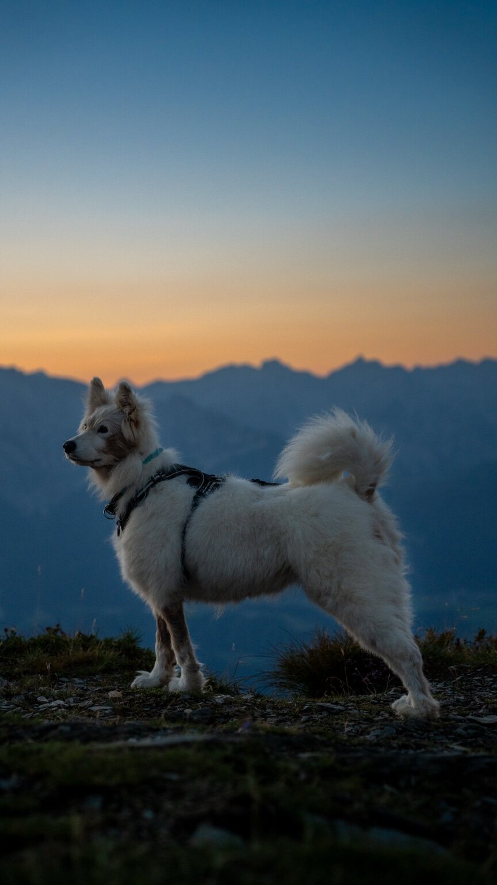

MAPQ / HIGHLIGHTS
Tiere.
Tierfotografie in natürlicher Umgebung.

Deine Idee fürs nächste Shooting?
Shooting anfragen ↗MAPQ / HIGHLIGHTS
Tierfotografie in natürlicher Umgebung.

Deine Idee fürs nächste Shooting?
Shooting anfragen ↗